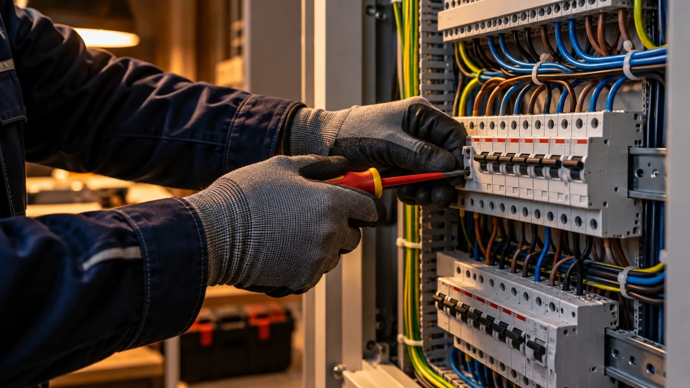
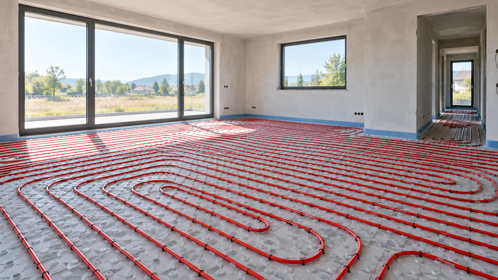
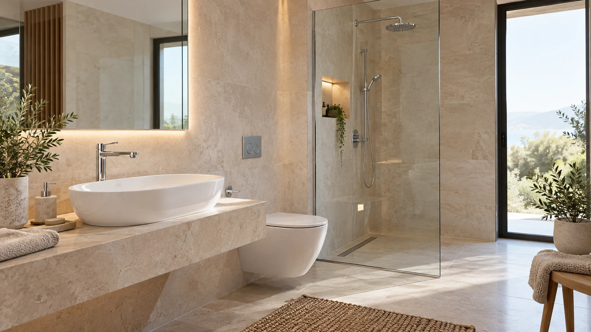

Instalații electrice
Montaj, înlocuire și reparații pentru instalația electrică. Tablouri, circuite, prize, întrerupătoare și corpuri de iluminat.
Discutăm instalația electricăUN OM PRICEPUT. SOLUȚII PENTRU CASA TA.
De la un circuit electric la confortul întregii case. 26 de ani de experiență în instalații, în Făgăraș și oriunde ai nevoie.

de experiență
în instalații
SERVICII
O instalație nouă, o renovare sau o reparație.
Discutăm ce ai nevoie și găsim soluția potrivită.
Montaj, înlocuire și reparații pentru instalația electrică. Tablouri, circuite, prize, întrerupătoare și corpuri de iluminat.
Discutăm instalația electricăInstalații de alimentare cu apă, montaj obiecte sanitare, înlocuiri și remedierea pierderilor de apă.
Montaj și reparații ale conductelor de evacuare, racorduri și intervenții la instalația de canalizare.
Montaj de calorifere și conducte, modificări și reparații ale instalațiilor de încălzire.
Montaj de sisteme de încălzire în pardoseală, adaptate spațiului și proiectului locuinței.
Montaj de aparate de aer condiționat și lucrări de instalare pentru confort în zilele călduroase.

BANDAS MIRCEA · INSTALATOR
Sunt Mircea. De 26 de ani lucrez cu instalații și găsesc soluții pentru problemele din casele oamenilor.
Instalațiile electrice sunt domeniul meu de bază. Mă ocup și de instalații sanitare, canalizare, încălzire și aer condiționat — pentru lucrări noi, renovări sau reparații.
Mă deplasez și în alte localități. Spune-mi unde este lucrarea și stabilim împreună detaliile.
DE LA INSTALAȚIE LA CONFORT
Lumină unde ai nevoie. Apă care curge cum trebuie. Căldură în fiecare cameră. Fiecare lucrare începe cu o discuție clară despre ce ai de făcut.
Povestește-mi despre lucrarea ta
PENTRU PROBLEMELE CARE NU AȘTEAPTĂ
Disponibil pentru intervenții de urgență, inclusiv seara și în weekend.
Locația și disponibilitatea pentru deplasare se confirmă telefonic.
HAI SĂ VORBIM
Spune-mi ce se întâmplă, unde este lucrarea și când ai nevoie de ajutor.
BINE DE ȘTIUT
Da. Pentru lucrări în alte localități, stabilim deplasarea în funcție de locație și de lucrare.
Descrie lucrarea și locația. Costul se discută în funcție de intervenția necesară, materiale și condițiile de la fața locului.
Da. Poți solicita atât reparații și montaj punctual, cât și lucrări de instalații mai ample.